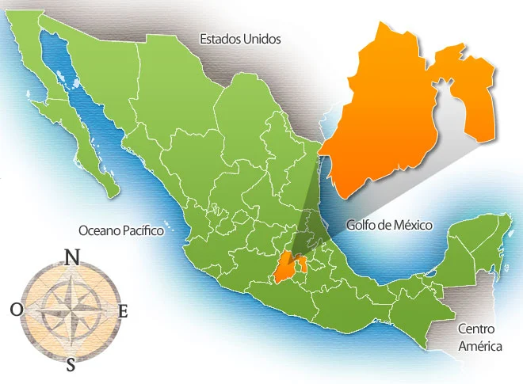
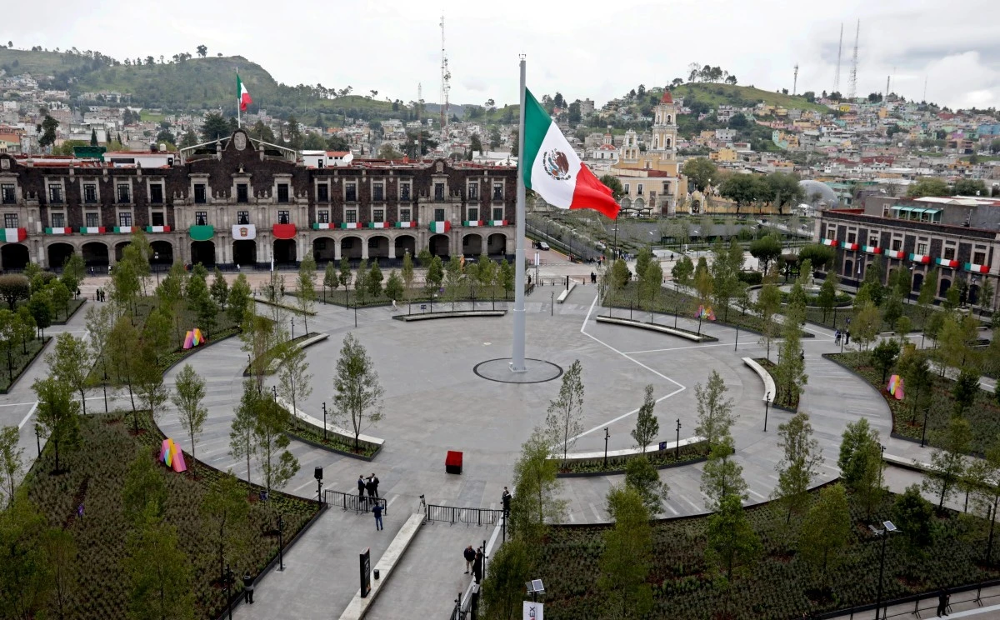

La historia de un estado, de una provincia política, siempre tiene el riesgo de ser una abstracción, sobre todo cuando −pretendiendo hacer una historia social−, se circunscribe a los límites políticos. Además, en nuestro Estado de México las unidades socioeconómicas y socioculturales han ido cambiando al ritmo de los tiempos.
"Si a esto añadimos que la historia política del Estado de México es en cierta medida la historia de varias desmembraciones que ha sufrido y que, a pesar de ellas, es actualmente la entidad más poblada de toda la federación, incluso frente al Distrito Federal, con una población procedente, en mucho, de otros estados, caemos en la cuenta de la peculiar dificultad de abordar, en espacio reducido, el devenir del Estado de México", son palabras de los historiadores Ma. Teresa Jarquín y Carlos Herrejón Peredo del Colegio de México.
En cada época, los personajes han actuado de acuerdo con las necesidades e inquietudes de la sociedad; desempeñaron oficios o profesiones que la actividad social o económica de su momento requería; pensaron según el grado de educación o el nivel cultural de su tiempo y, finalmente, tomaron parte en los hechos históricos que les correspondió vivir, siguiendo los ideales en que se basó su proyecto personal de vida.
El Estado de México se localiza en la altiplanicie mexicana, en la porción central de la República Mexicana, está comprendido entre los meridianos 98° 36’ y 100° 37’ de longitud oeste del meridiano de Greenwich y los paralelos 18° 22’ y 20° 17’ de latitud norte.
La extensión territorial de la entidad es de 22 499.95 km2, lo que representa 1.1 % del territorio nacional, por lo cual ocupa el lugar 25 en cuanto a superficie, en comparación con las demás entidades federativas que conforman al país. El Estado de México colinda al norte con los estados de Querétaro e Hidalgo; al este con los estados de Puebla y Tlaxcala; al sur con los estados de Morelos y Guerrero; y al oeste con el estado de Michoacán de Ocampo y una pequeña porción de Guerrero. Limita además con el Distrito Federal, rodeándolo en sus porciones norte, oriente y occidente
El relieve de la entidad se caracteriza por presentar dos grandes regiones: una donde predominan las sierras y lomeríos, que ocupan 76 % del territorio estatal; y otra, en donde se encuentran llanuras, valles y mesetas en 24 % del territorio. Esta heterogeneidad espacial proporciona una variedad de altitudes, tipos de roca, suelos, climas, vegetación, flora, fauna y paisajes característicos del territorio estatal.
